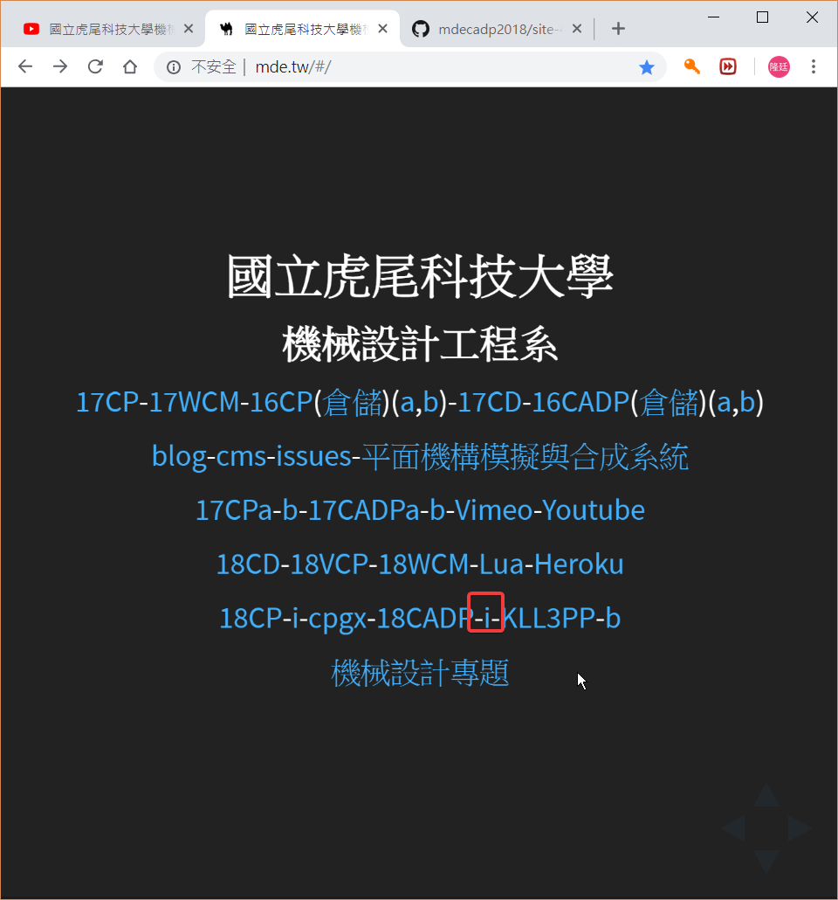
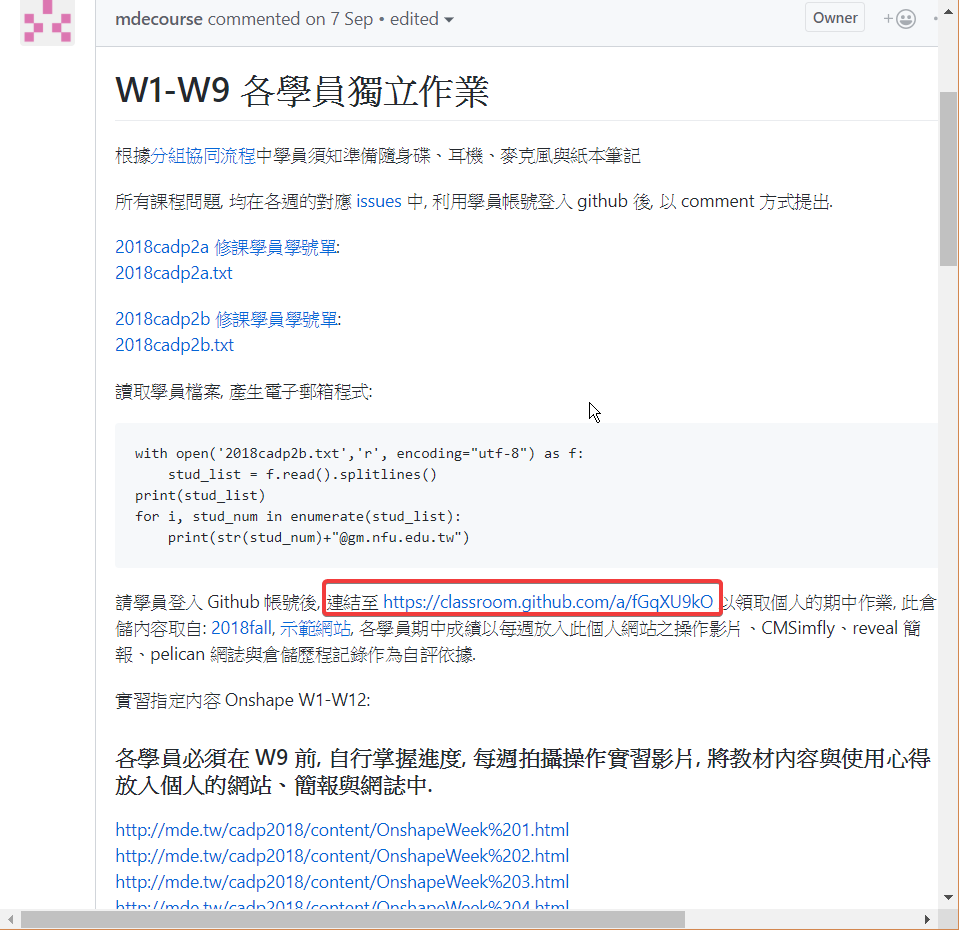
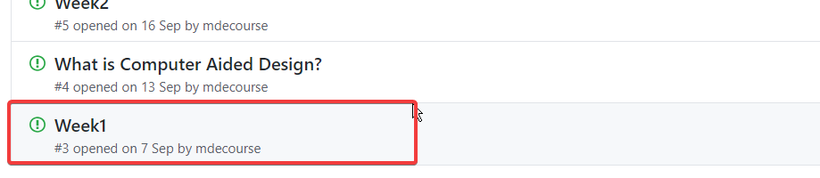
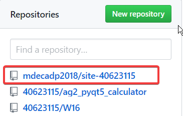
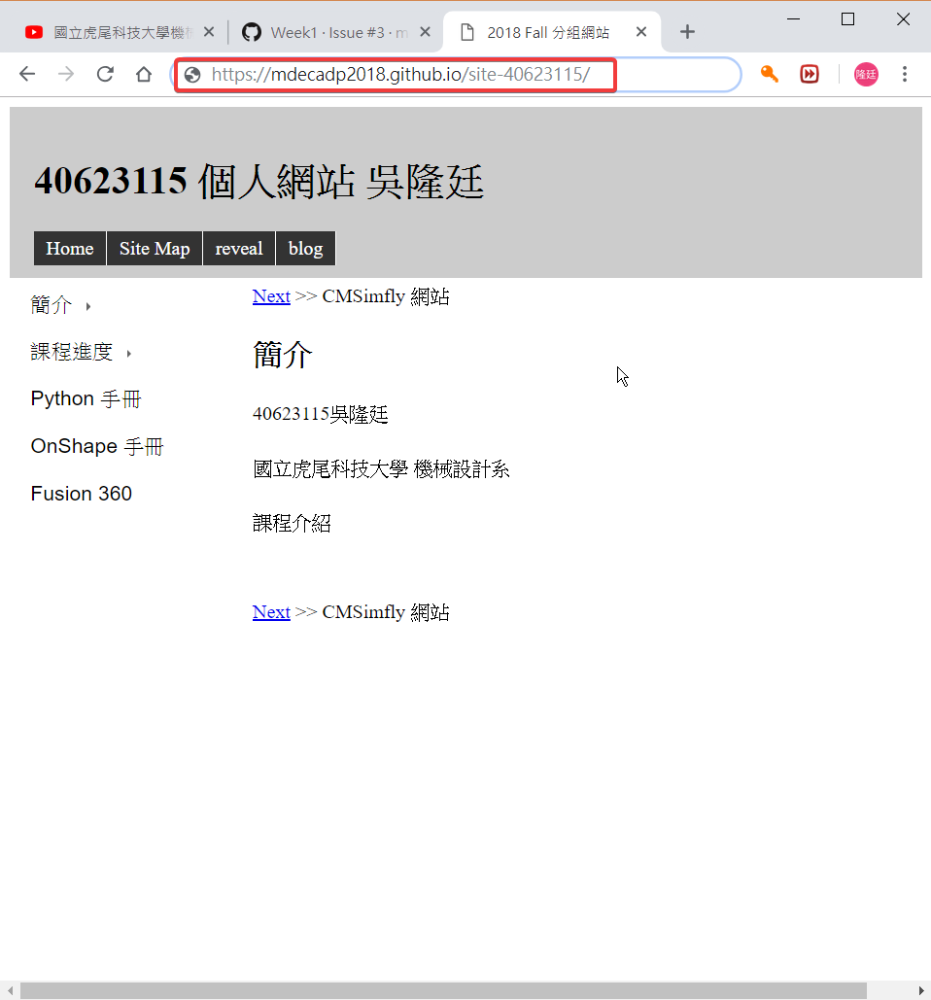
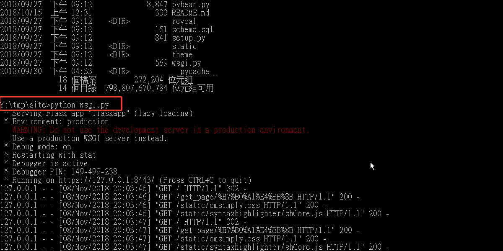

課程內容 << Previous Next >> Week21
Week11
- 進入mde.tw網站後，前往issue -->Week1 登入gittub後連結至 https://classroom.github.com/a/fGqXU9kO 領取個人期中作業。
- 在github倉儲中在網誌中加入github.io的命令 例: https://mdecadp2018.github.io/site-40623115就會連結到個人網站。
- 前往cmd命令提示字元，將github個人倉儲 clone 下來。
- 使用cmd命令提示字元進入site資料夾，使用git branch 檢查分支，並利用git checkout 更換分支master-->gh-pages。
- 在cmd命令提示字元輸入python wsgi.py近端啟動[動態]個人網站。
- login進入編輯[動態]個人網站-->密碼admin(預設)。
- 點擊Edit All可編輯所有個人網站的頁面。
- 編輯完畢後，按下Save鍵或Ctrl+S儲存頁面，接著按下頁面右上角黑色按鈕generate_pages轉換成遠端。
(ps:在gh-pages分支下，才有辦法維護個人倉儲)
(圖片上點擊滑鼠右鍵，按下另開新分頁，圖片即可放大)
上課影片
課程內容 << Previous Next >> Week21